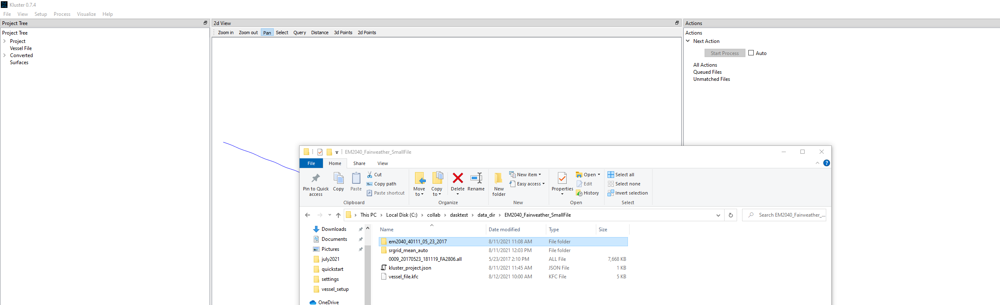
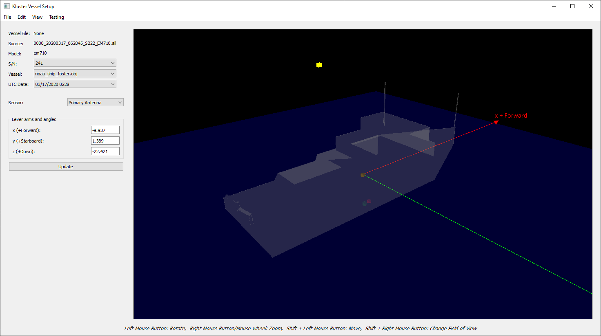

Vessel Setup¶
The multibeam file contains a record of the sonar installation offsets and angles as they are entered in the multibeam acquisition software (SIS in the case of Kongsberg sonar). Kluster will take that record and use it as a starting point, allowing you to further alter these records using the Vessel Setup screen.
The Vessel Setup tool has the directions displayed at the bottom of the window for how to move and rotate the display.
The basic idea here is that when you process in Kluster (the second step after conversion) you need to know offsets/angles and uncertainty parameters to do the calculations in the correct way. You can’t use the positioning you get from the positioning system without knowing where it is in relation to the multibeam, now can you? The data you see in the Vessel Setup allows you to do these calculations, so it is very important you get it right. If your data looks ok in the sonar screens (SIS for Kongsberg), you are probably at least on the right track, as Kluster will use those values in the processing. If there are multiple entries, it uses the nearest one in time that is prior to the time of acquisition, which is why all the entries in the Vessel Setup have an associated time.
Using the multibeam xyzrph¶
The simplest way to do this is to highlight one of your converted datasets, and select Setup - Vessel Offsets. The tool will take the entries in this converted data instance and show them on the screen. These entries can also be viewed in the attribute window, see the xyzrph attribute. You’ll see the xyzrph attribute has the entries with the corresponding UTC seconds, where the Vessel Setup tool shows the translated UTC date. In the below example, we can see that 1495563079 in UTC seconds is equivalent to 05/23/2017 1411 UTC.

In our case we are viewing without the use of a vessel file, which is why we see ‘Vessel File: None’ at the top. More on this later. We also see the Converted data identifier “em2040_40111_05_23_2017” which as a reminder is the sonar model_serial number_date of the data.
The Vessel dropdown here controls the 3d model displayed. This is optional and can even be disabled using View - Show Vessel. I include two options currently, roughly modeled after NOAA vessels: noaa_ship_foster.obj and westcoast_28ft_launch.obj. You can find these vessel models in the HSTBklusterguivessel_stl_files directory. Any .obj file that you add here will be usable in the Vessel Setup tool, feel free to build your own! Try to make it pretty simple, too many faces/vertices will make the display pretty ugly.
Just to reiterate, messing with the vessel model is optional! It does not affect the data. Since I know that this data comes from a small boat, I’ll be using the westcoast_28ft_launch.obj Vessel. If you change the Sensor to Basic Config, you get the options for moving the vessel model around. Basically, you want to align the boat with the sensors, just so you can get a sense of where equipment is in relation to the vessel. I like to turn off the waterline for this (the blue plane in the display) by going to Sensor=Waterline and unchecking Show Waterline.
With that done, I head back to Basic Config and start changing these values. First, I move the boat up by setting Z = -1.0 and clicking update. I continue through this process until I get the sonar sensors about where they should be on the boat. Here’s what I got.

It’s not an exact process, but I think it is useful to just have a rough idea of a boat to picture where sensors are. Again, you can always just ignore this part of the Vessel Setup if you like.
Let’s save these changes we’ve made back to the original xyzrph record. Simply go to close the Vessel Setup tool by clicking the X in the top right of the window. It will ask you to save the changes. Select Yes. It then asks you if you want to update the multibeam data, build a new vessel file, or cancel. Hit No here to update multibeam data. Now when you reopen the Vessel Setup tool, it will show the changes we have made. You can also see the changes in the xyzrph attribute.

Using the Vessel File¶
Now let’s talk about the vessel file. Let’s say you want a single place to hold the offsets/angles for multiple vessels across multiple days. You want to store those in a single place so that you can look at them later. You also want the ability to override the offsets and angles in new multibeam data with values you have calculated yourself. The vessel file can do this. It’s a pretty simple process too!
With our converted data loaded in Kluster, simply go to File - New Vessel File and add a new file. Save it wherever you like. I’m going to just put it next to my multibeam data. You’ll notice that the vessel file shows up in the Project Tree.

This new vessel file will contain all the xyzrph data of all currently loaded converted datasets. We only have this one converted dataset, so that’s what will be in the file. We can examine the file by going to Setup - Vessel Offsets. You’ll see that this time, there is a file in the Vessel File section. We can make changes to this file in the same way as before, except this time, we save a new file instead of updating the multibeam data. You’ll notice that you no longer have that option, just to make sure we don’t mess up our multibeam data!
If you want to go back to just working with the multibeam data xyzrph, you have to close the vessel file.
Vessel Setup and Actions¶
Let’s get rid of the vessel file for this next section (if you have one loaded) by going to File - Close Project. Then we drag in our converted data (the ‘em2040_40111_05_23_2017’ if you are using the data I have on the GitHub repo) to get back to where we were prior to the Using the Vessel File section.
{kind=link}
Go ahead and go to Setup - Vessel Offsets again with the converted data highlighted to get back to the Vessel Setup tool. Now we can discuss actions. We already know about two actions: convert actions (which we get on adding new multibeam files) and processing actions (which we get on new converted data). Now we can look at actions generated by changes in the Vessel Setup. In Kluster, whenever you make a change that requires reprocessing, Kluster will automatically generate that action for you to run without you having to understand what needs to be done. Here are the actions you’ll see on Kluster Vessel Setup changes:
Changing an Uncertainty value - “Process only computing TPU”
Changing an Offset value - “Process starting with sound velocity”
Changing an Angle value - “Run all processing”
Changing a Waterline value - “Process starting with sound velocity”
There are a few actions that are less clear:
Changing latency value will require restarting the full processing stack - “Run all processing”
Changing Primary Antenna values only affect uncertainty - “Process only computing TPU”
Changing Basic Config values do not generate actions, do not affect data!
Let’s try it out! Go ahead and change an uncertainty value to see what happens. I’ll change Beam Opening Angle under Sensor=Uncertainty to 1.5 degrees. This is going to result in a new TPU action. Close the Vessel Setup, Save changes, and select No to update multibeam data. You should see the new action in the Actions window.

Go ahead and run this action to clear it. It will only do the TPU processing, so it should be pretty quick. Now let’s go back to the vessel file for a bit. Go to File - Open Vessel File to load it back in. On loading it back in, you’ll notice there is a new TPU action. Its the action to reprocess to get us back to a Beam Opening Angle of 1.3 degrees, or whatever your original value was! The original value is contained in the vessel file, since we added the vessel file to the project before we made the change to the Beam Opening Angle.
And here is a nice feature of the vessel file. Without the vessel file, we are locked in to any change we make when updating the multibeam xyzrph data. But with the vessel file, we have a separate xyzrph dataset, so we can back out changes without running the actions!
Let’s try this out. We currently have an action to process only computing TPU, to get back to our original processed TPU before we made that Beam Opening Angle change. If we go into Vessel Setup, change the Beam Opening Angle to 1.5 degrees and hit update, close the vessel setup saving our changes, and overwrite our existing vessel file, the action should go away! This is because the vessel file now matches the multibeam xyzrph so there is no action anymore. So we can make and undo changes with the vessel file, which is a pretty nice feature.
Importing Data¶
In addition to viewing and editing offsets and angles from converted multibeam data, we can also import directly from these files. Let’s try it out here. If you have data loaded in Kluster already, go ahead and go to File - Close Project. You don’t have to do this, but it will make the import process and how it works a little bit clearer. With no data loaded in Kluster, go to Setup - Vessel Offsets. You’ll see it come up blank, just like this:

Now we are going to try out an import. In the Vessel Setup tool, go to File - Import from Kongsberg. I’m going to pick a file that I know I have a corresponding POS MV .000 file for, just to show you the POS MV import later. Here is the result after importing a Kongsberg multibeam file:

Basically looks like before, right? This is getting the same data from the multibeam file that is in the converted Kluster data. You can also import from a POS MV file to get the values for the IMU and antenna position and angles. Let’s do that here.
{kind=link}
Now we have an antenna location, shown here as the highlighted yellow box in the upper part of the vessel setup window. Antenna location is used in the TPU calculation, so it is nice to have here to build that part of the uncertainty calculation. This is also a useful part of the general workflow where you might do the following:
Drag in a new multibeam file, and convert that data by hitting start process once.
Go into Vessel Setup and import the POS MV file to get the antenna location.
Save to multibeam xyzrph, and hit start process again to complete the processing.
Adding and Editing Entries¶
You might want to add a new timestamped entry manually to the Vessel Setup, or edit the time of an existing entry. Kluster allows you to do both of these, using the Edit tools.
To edit the timestamp of an existing entry, simply have that entry loaded (in the UTC Date dropdown) and go to Edit - Alter Timestamp. Then put in a new timestamp. Remember in Kluster, we will be using the Vessel Setup entry that is nearest in time to each ping but prior to the time of ping.
To add a new timestamp to an existing entry, go to Edit - New Entry. Enter in the timestamp for the new data and watch as the existing entry is duplicated under the new timestamp. You can now edit this entry to have the values you want.